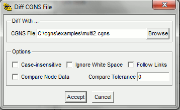

|
This dialog is invoked from the File
| File Info.. menu selection or from the |
 |
This panel sets the data size for automatic loading
of node data into the Node Data window. It
is invoked from the Config | Auto Data Size..
menu selection or the |
 |
Dialog to find a node in the Node
Tree. This is invoked from the Tree | Find...
menu selection or the |
|  | Runs the cgnsdiff program on the currently
loaded CGNS file and the one selected in the dialog. This is invoked from the Tools
| Diff CGNS Files... menu item, or the |
 |
Runs the cgnscheck program on the currently
loaded CGNS file. This is invoked from the Tools
| Check CGNS... menu item or the |
 |
This is invoked from the Link Node Browse button on the Link Description panel. The Link File name is shown in the header. To select the node within the file, highlight it, then select the Accept button. The Cancel button will close the window, and cancel the selection. |

This panel sets up the HTML browser and location of the CGNS documentation. Normally, the CGNS Documentation URL points to the base CGNS documentation on the NASA Glenn server. The Browse buttons will invoke a file selection dialog to locate the browser or local copies of the documentation. The Accept button accepts the setting, the Defaults button will restore the default values, and the Cancel button will close the window and cancel the changes.